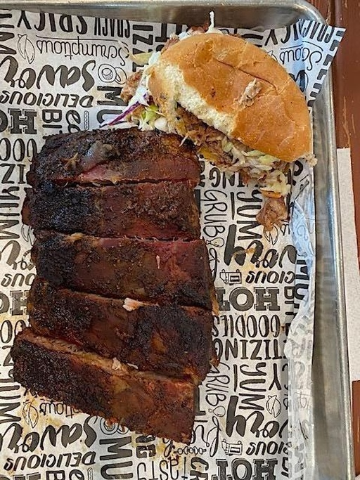

Eating Around Louisville, Kentucky, Part OneA few weeks back I wrote about the foods indigenous to Louisville and Kentucky—the hot brown sandwich, Derby Pie, the Old-Fashioned cocktail and others. But Louisville increasingly has more of a national and global gastonomy, not least in the gentrifying neighborhoods like Highlands and Germantwon, where young chefs have opened as many Thai and Mexican restaurants as they have barbecues and steakhouses. On a recent three-day trip to the city, I ate well at some old favorites and some that have now become new ones. My first stop, as is usually the case, is Pat’s Steakhouse, which regular have long called “Min’s” after Minnie Pearlman who ran it with Michael Francis, back in 1958. His son, Pat, is the new guy, since 1985. The 150-year-old two-story coach house with garden gives you an idea of what to expect inside, which is a very old-fashioned décor of dark woods, brass chandeliers, Waterford crystal, hundreds of old photos and white tablecloths, along with a wall of more than 60 bourbons. The menu hasn’t budged much in seven decades, so you may begin with an array of icy oysters ($21) and hot rolls and butter. Baby frogs’ legs has long been a staple here ($25.50 serving for two), richly bathed in garlic butter. There’s also Irish stew ($10) in fall and winter. Seven cuts of beef are offered, plus meatloaf with tomato sauce ($32), and I like the New York strip steak best; at 16 ounces ($56) it’s a lot to handle. Pat’s fried chicken—half a bird ($31) —is as crunchy and moist as you could imagine, and the potato sides are terrific. Finish off with flakey apple pie or strawberry shortcake. The waitstaff has members going back four decades, and Pat only take Mondays off, so if you don’t ask for him, he’s likely to drop by your table in any case. Address: 2347 Brownsboro Road 502-893-2062 Open nightly for dinner. Jack Fry’s also has the charm of the antique to its décor, and pre-dates Pat’s by a quarter century in business, established by Jack Fry and his wife, Flossie. Jack’s infatuation with sports and gambling provided him with an array of colorful, rakish characters from those worlds, and the dining room is decked out accordingly with mementoes. Jack closed the place in 1972, which re-opened briefly as a Mexican eatery, but rebounded as Jack Fry’s in 1982, then bought by Susan Seiller in 1987. In 2008, ownership passed to former manager Stephanie J. Meeks, who is vitally involved in every aspect, and treats every newcomer like an old-timer. There’s a bit of Southern twang in the cooking here, with classics like shrimp and grits ($18), spicy fried oysters ($18) and buttermilk fried chicken sandwich ($17) on a bun with boursin cheese and Fresno chili slaw that packs a punch, but it’s more a continental menu with snails in garlic butter ($18), braised short ribs ($43) with crispy onions, and duck confit ($36) over English peas and basil puree. I raved about the chicken tortilla soup here ($$9). The blue cheese salad ($11) with Gorgonzola is a sumptuous rendering. They do a seasonal fruit cobbler with vanilla ice cream ($10). ADDRESS: 007 Bardstown Road 502-452-9244. Open for lunch Mon.-Fri.; for dinner nightly. Louisville has its share of barbecue pits and stands, many Black owned. My choice is always led by whether there is wood stacked up outside and smoke curling from a chimney, both virtues I found at Blackdeck, owned by self-taught chef Chan Nelson, who insists, “You see, Great BBQ is like a great steak. You don’t drown a great aged steak in A1 or any other steak sauce. You let a great steak speak for itself. Great BBQ is the same way.” The posted menu of signature sandwiches totals ten options from $16-$24, including “burnt end bomb” of pulled pork. There are also platters of ribs and a three-meat platter, or you can buy the meat by the pound ($14-$21) and sides ($4) of smokey beans, smoked mac and cheese, and yams. Address: 801 West Kenwood 502-705-7662 Open daily for lunch and dinner. |
 |